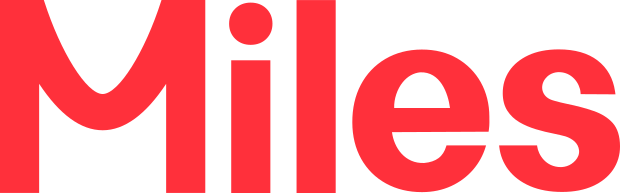

Salme ved reisens slutt
Om å gå fra bordet hos Equinor
Rogaland, lokalcamp
2026

Industri 4.0
Oppgaven

TDI & EPN
(eller; en reise i TBF-er)
CoPilot og Fellesskriving
Hva jeg sier når jeg sier takk for meg
CV-skriving og sannheten
Karriere, oppdrag og fleksibilitet
Takk for meg